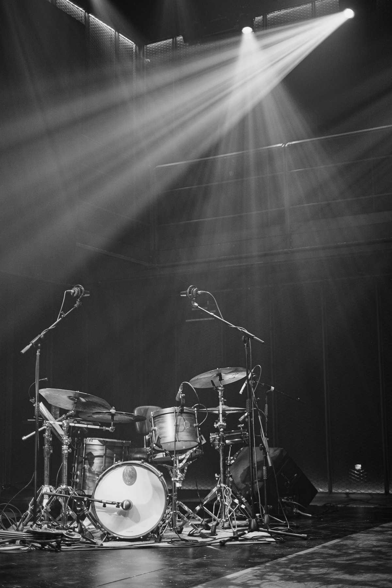
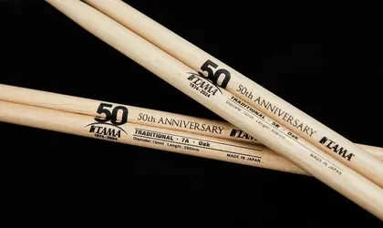
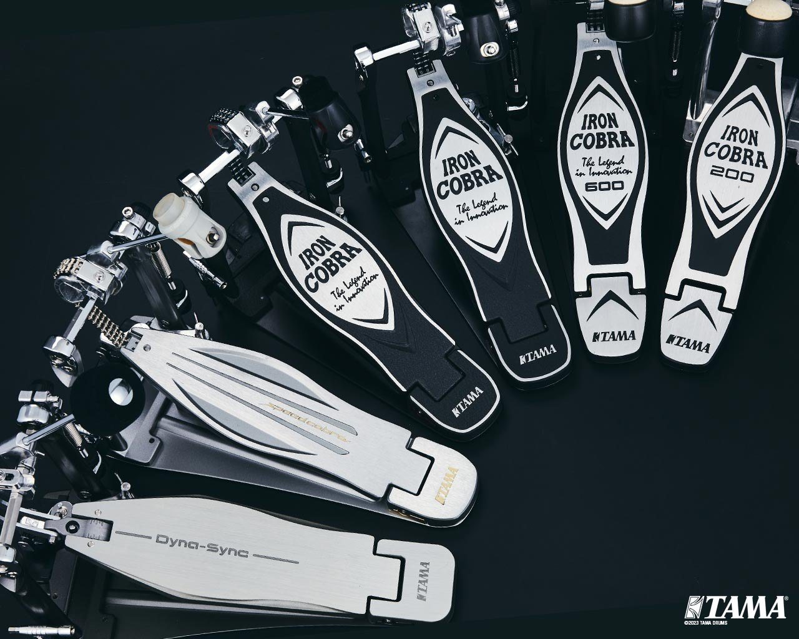
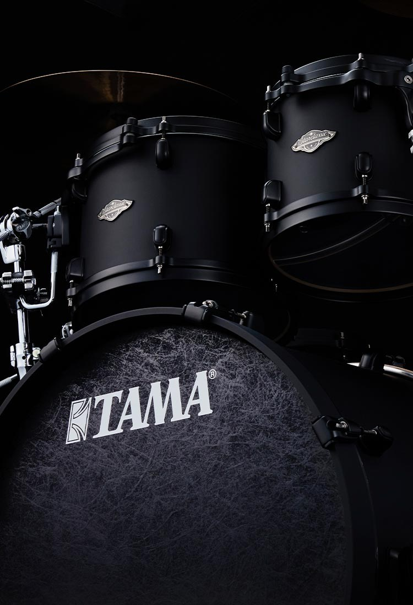

Desde 1974
História
Uma livraria em Nagoya, uma fábrica em Seto e a obsessão de fazer a bateria mais resistente do mundo.
1908 → 2024 · 星野楽器
Origem
A TAMA é a marca de baterias da Hoshino Gakki, empresa japonesa que também fabrica as guitarras Ibanez. O nome é uma homenagem a Tama Hoshino, esposa do fundador, e soa como a palavra japonesa para “joia”.
-
1908 · Nagoya
Tudo começa numa livraria
A Hoshino Gakki nasce como a seção de partituras e instrumentos da livraria Hoshino Shoten, em Nagoya. Décadas depois, viraria uma das maiores fabricantes de instrumentos do Japão.
-
1962 · Seto
A fábrica Tama Seisakusho
A Hoshino abre em Seto a fábrica Tama Seisakusho. Poucos anos depois, saem dali as primeiras baterias, vendidas com a marca Star Drums.
-
1974 · A marca
Nasce a TAMA
A empresa decide parar de competir por preço e passa a competir por qualidade. As baterias ganham um novo nome, TAMA, e a ambição de estar nos maiores palcos do mundo.

-
1977 · Ferragens
A herança da Camco
A TAMA adquire parte da americana Camco e, com ela, o projeto do pedal de corrente que mudaria o mercado. Começa a fama de “ferragens indestrutíveis”.
-
1978 · Invenção
Octobans
Oito tubos estreitos, cada um com um comprimento e uma nota. Os Octobans viram assinatura sonora de Stewart Copeland no The Police e de toda uma geração do rock progressivo.
-
Início dos anos 90 · Pedais
Iron Cobra
O pedal que virou sinônimo de bumbo pesado chega ao mercado. Trinta anos e várias gerações depois, continua sendo a referência.

-
1994 · Baterias
Starclassic
Cascos finos, aros fundidos e o sistema de suspensão Star-Cast. A Starclassic coloca a TAMA definitivamente no topo dos estúdios.

-
2013 · Flagship
STAR
A linha STAR resgata o nome das primeiras baterias da casa para batizar o que a TAMA faz de mais refinado, construído à mão no Japão.
-
2024 · Hoje
50 anos de TAMA
Meio século depois, a marca comemora com edições especiais, festivais de bateria e uma nova geração de artistas, do Brasil ao Japão.
Curiosidades
Por que tudo se chama Star?
Campo de estrelas
“Hoshino” pode ser lido como “campo de estrelas”. É daí que vêm Imperialstar, Superstar, Starclassic e STAR.
Joia
“Tama” é o nome da esposa do fundador e também lembra a palavra japonesa para joia ou esfera preciosa.
O mais forte
“The Strongest Name in Drums” é o lema da marca, herança da fama de inquebráveis que as ferragens TAMA ganharam na estrada.
Fontes: Wikipédia (Tama Drums, Tama Iron Cobra), Drummerszone, Gear4music. Algumas datas variam entre as fontes.